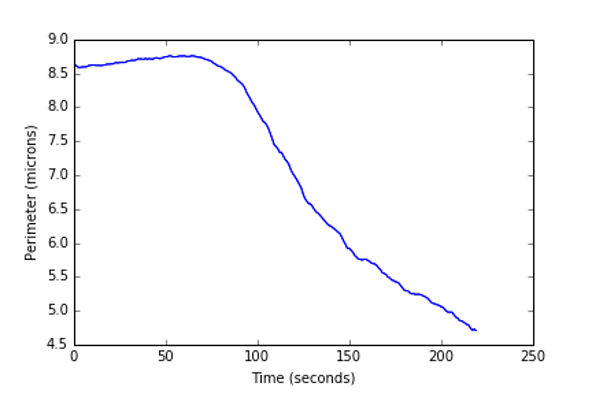
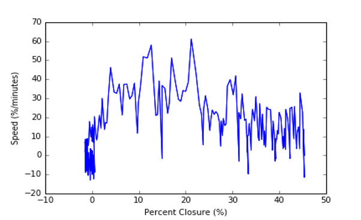
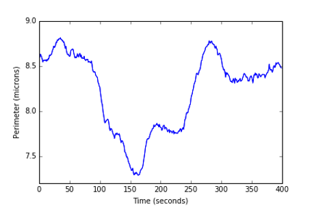
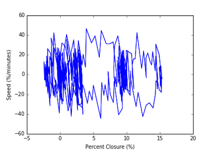
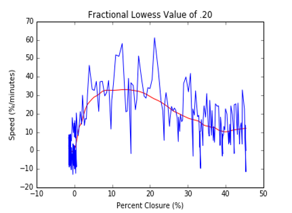
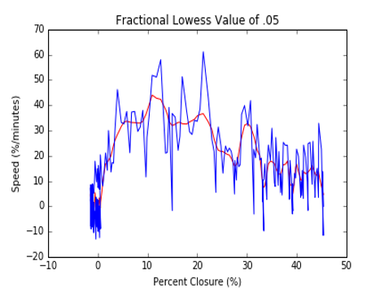
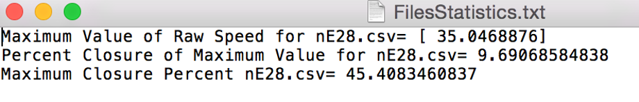

During my senior year in college, I worked in the Lab of Amy Shaub Maddox, which specialized in biological research on Cytokinesis. My job at the lab was to run simulations through a stochastic Brownian simulator of cellular processes called Cytosim and perform data analytics and structure data flow. My background is in Physics so conducting research in a Biology lab was a steep learning curve at first.
One of the projects I worked on at the lab was to perform data analytics on two dimensional simulations in Python, C++, and MatLab. The goal of the project was to calculate statistical measurements on simulated data of cell division using a smoothing algorithm and ellipse fitting estimations.
The video above displays one of the two dimensional simulations run through Cytosim. As you can see, the ring closes rapidly and clusters around the centroid. With the help of my boss Daniel Cortes, a post doctorate working in the Lab of Amy Shaub Maddox, we aimed to figure out a solution to measure the closing of the ring that was robust over the entirety of the simulation.
The first challenge was to organize and structure the data flow coming from Cytosim. Each time-interval contained hundreds of values for the X and Y coordinates of the cell and each simulation contained roughly between ten thousand and thirty thousand data points for the X and Y coordinates of the cell.
From each simulation, I extracted the coordinates into an excel file and ran a simple Excel macro to clean the data by removing inconsistent white spaces. In Python, the ‘Pandas’ module was used to index and store the CSV files for each simulation from excel into a Python database. Files were then iterated through within my given directory. Going through each file individually, the Pandas module stored the CSV file as a database. Then, I separated the X and Y coordinates into separate lists for each time frame that could be accessed individually such that two such lists (one for X and one for Y coordinates) were generated for each time point. Since cells in the data contain elements that are empty (referred in Python as ‘NaN’ which is short for ‘not a number’), a conditional statement was made to skip every cell in both the X and Y lists that are empty.
Figure 1: Graph of X, Y coordinates at the first-time frame for the simulation ‘nE28’
Being able to plot the 2D coordinates on Python (Figure 1), it was easier to determine whether our algorithms and simulations were working correctly or not. With the X and Y coordinates sorted, we can now estimate a best fit ellipse and calculate perimeter, closure, and speed.
The next step was to fit an ellipse through the X and Y data points via least-square fitting. Using pre-made functions by Nicky van Foreest for generating the best-fit ellipse as well as its geometric descriptors (Fitzgibbon, Fisher, 1996), I was able to plot a best fit of an ellipse through the original X and Y data points using the ‘Matplotlib’ module in Python. Along with these functions, I also derived values for ellipse perimeter, percent closure (normalized measure of how much smaller the current ellipse is than the original ellipse at time point zero) of the ellipse, and speed of closure for the simulation data over time and stored these into separate python arrays. As well, I created a separate list for time in order to graph against perimeter in ‘Matplotlib’.
Figure 2: Graph of ellipse perimeter versus time for simulation ‘nE28’
Figure 3: Graph of speed versus percent closure for simulation ‘nE28'
With these plots, we were able to quickly determine whether these simulations were biologically accurate by viewing the structure of perimeter versus time and percent closure versus speed. As discussed with Daniel Cortes, a biologically realistic simulation for the plot of perimeter versus time would have a steady decrease in perimeter over time while a biologically unrealistic simulation would have perimeter closing followed by a sudden increase in perimeter or a perimeter that did not close at all. Figures 2 and 3 represent plots of a simulation that was biologically accurate.
 Figure 4: Plots of ellipse perimeter over time on the left and percent closure versus speed on the right
Figure 4 displays the perimeter closure over time and percent closure versus speed of a simulation called ‘KH46’. As seen on the graph to the left, the perimeter partly closes and then increases again over time. From the percent closure versus speed plot, it is hard to determine any type of relationship between closure and raw speed due to how messy and clumped the data is towards the center. As well, the ring only closes roughly 15% of its original value and has a large negative velocity for portions of the data. These graphs would suggest that the data from this simulation was not biologically realistic.
Finally, the last step of the program was to run a statistical reducing algorithm on the data that eliminated outliers and measurement noise for each file. Using an imported module called ‘Lowess’ (Cleveland, 1979) that calculates statistics in Python, I inputted the X and Y coordinates and a fractional number into the ‘Lowess’ function and it outputted a smoothed two-dimensional array of the fitted X and Y values. ‘Lowess’ stands for “Locally Weighted Scatterplot Smoothing” and given a fractional value it outputs fitted values that can change with how you change the inputted fractional parameter. We experimented with fractional values from .05 to .35 in increasing increments of .05 and found that the fractional value of .25 fitted the perimeter data and the fractional value of .10 fitted the percent closure accurately. In an outputted text file, the maximum value of raw speed, the percent closure at that maximum value, and the maximum closure percentage were recorded as well as the graphs of perimeter versus time and raw speed versus percent closure for the fitted data.
 Figure 5: “Lowess” statistical smoothing of percent closure versus speed with varying fractional percentages of .10, .20, and .05
We experimented with a smoothing algorithm called “Lowess” (Cleveland, 1979) that inputted two arrays of data and a fractional percentage that varied depending on how much of the data needed to be smoothed. We concluded that the best fit for our calculations of percent closure versus speed had an inputted fractional value of .10 to the “Lowess” function.
Figure 6: Example of outputted text statistics for the simulation ‘nE28’
Instead of manually calculating analytics for each file, we can run the Python program and calculate the necessary statistical values automatically. A text file (Figure 6) will output all the necessary statistics needed for each simulation.